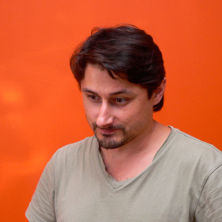

2014 год обещает нам множество интересных нововведений. Помимо новинок в HTML5, глобальные изменения в самой веб-платформе: Promises и модули — революция в стандартах разработки стандартов, Service Workers, @@create — отнаследуйся от HTMLElement!
Вадим Пацев
Пробуем Web Components уже сегодня
Несмотря на то, что спецификация находится разработке, уже сейчас с помощью X-Tag и Polymer можно попробовать эти технологии на вкус. В ходе мастер-класса мы создадим микробиблиотеку реиспользуемых блоков на основе парадигмы Web Components.
Владимир Кузнецов
Прототип сайта: разработка и развёртывание
Фронтенд-разработчики уверенно движутся в сторону систем сборки проектов. Лёгкий и непринуждённый деплой проекта на сервер позволит регулярно показывать заказчику готовые части и быстрее получать обратную связь.
Вадим Макеев
Возвращение ножа и паровоза
Как нарезать графику для вашей вёрстки и не порезаться? Плёвое дело: узнать поближе Фотошоп, посмотреть на альтернативные редакторы графики, разобраться в растровых и векторых форматах и методах экспорта, оптимизации и сборки, приготовиться реализовать всё на чистом CSS.
Дмитрий Дудин
Потрясающие возможности Web Audio API
Генерация, запись, обработка звука, эффекты, фильтрация, визуализация и объёмное распределение в браузере без использования плагинов. Простой и богатый API для создания потрясающих воображение игр и интерактивных веб-приложений.
Роберт Харитонов
Отдел вёрстки с нуля
История развития отдела вёрстки в Одноклассниках: причины, опыт организации, рефакторинг и путь к чистому коду. Помимо личного опыта и процессов в отделе, речь пойдёт о методологиях вёрстки и инструментах для командной разработки — зачем, как выбрать, на что обратить внимание.
Сергей Мезенцев
Семантический винегрет
Семантическая разметка укоренилась в вебе в виде множества стандартов. На смену привычным микроформатам приходят более универсальные технологии: JSON-LD, Острова, Microdata, Микроформаты 2.0 с их плюсами и минусами.
Роман Комаров
Грани опенсорса
Некоторые считают, что опенсорс — это зелёное поле с радугами и единорогами. Однако выйдя в него без подготовки, можно обнаружить себя в тёмном лесу, наполненном множеством непонятных и неприятных вещей. Как избежать ловушек? Как победить монстров? Какое снаряжение взять в путь?
Наташа Арефьева
Семантика или смерть
Что такое семантическая вёрстка в 2013 году. Какие уровни семантики возможны. Какими средствами мы располагаем: теги HTML5, атрибуты, микроформаты и другие. Семантическая вёрстка vs. семантический веб. Какой будет семантическая вёрстка в будущем?
Вадим Макишвили

Распечатай Яндекс.Карты
В Яндексе разработали лучшую в мире страницу печати Карт. Как они это сделали, с какими проблемами столкнулись, какие трюки изобрели.